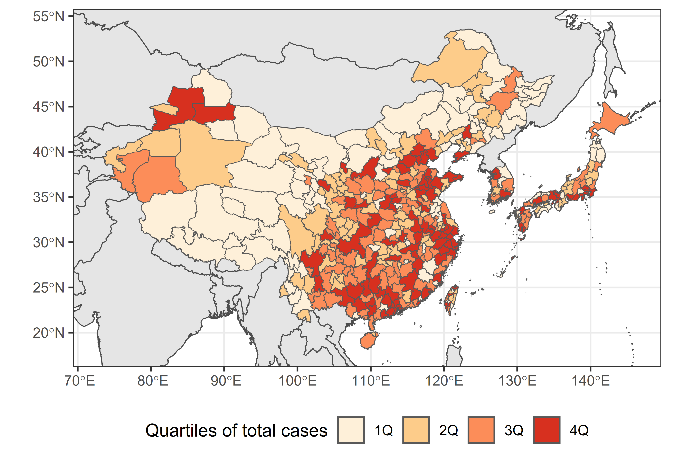
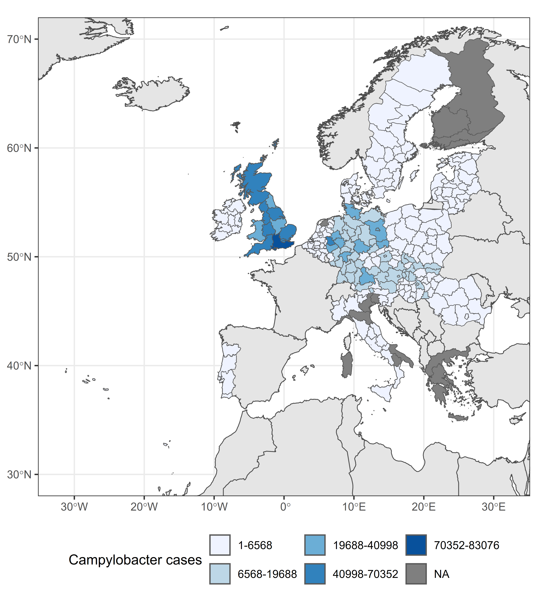
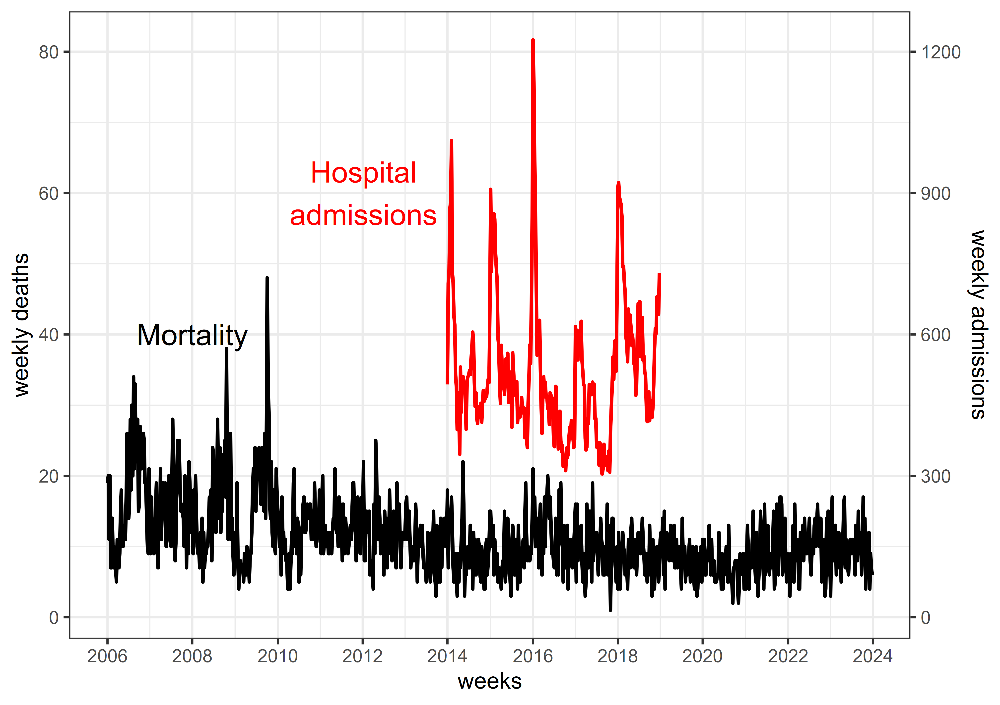
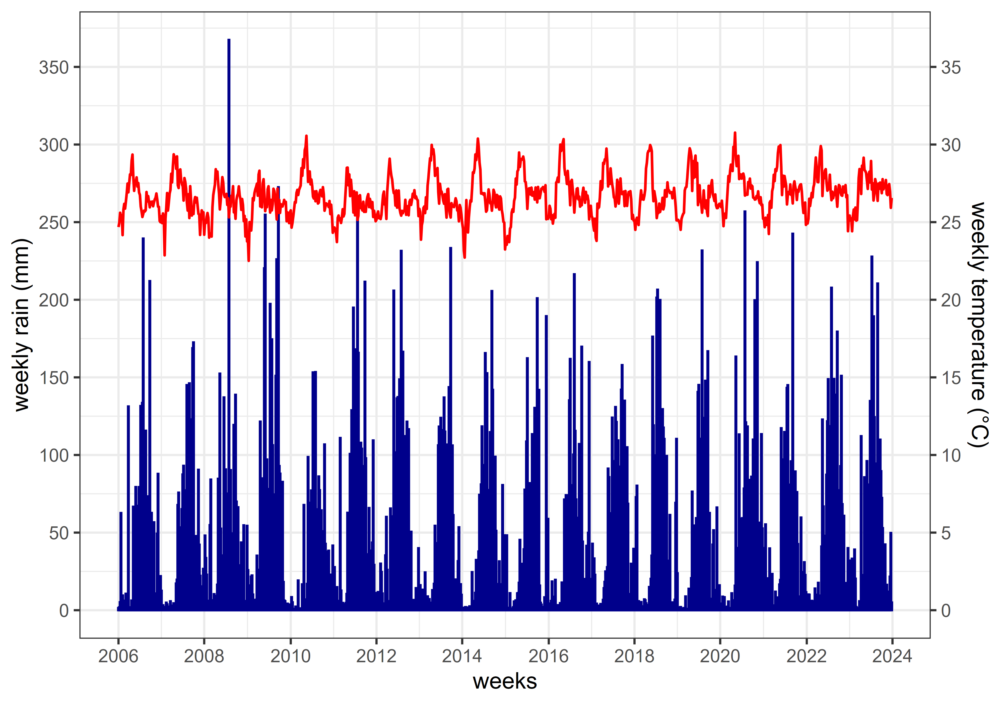
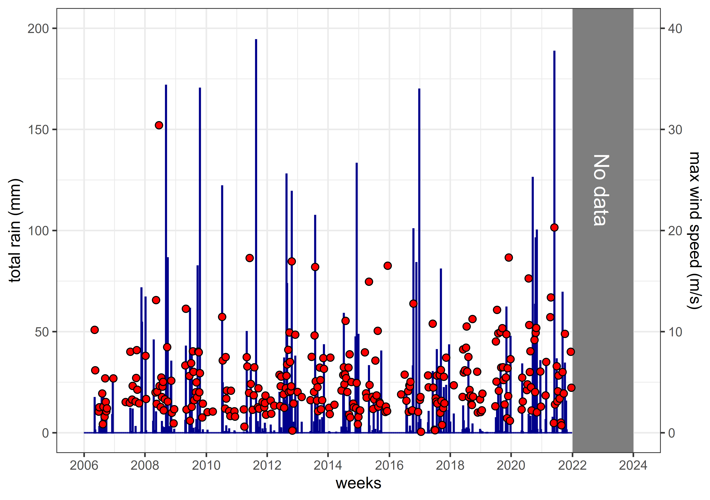

Data summary
Updated on 17 June 2025
Enteric diseases data
Records of enteric disease cases from 1993 to 2024 from 48 nations, encompassing government vital statistics, surveillance systems, hospital databases, and health insurance data, were provided by ClimED members. A total of 664,501 deaths, 62 million hospital admissions, 103 million hospital visits (outpatient and emergency room departments), 106 million episodes (all health insurance reimbursements), and 185 million surveillance cases were compiled. Table 1 lists the details of the compiled raw data.
Some enteric disease data are pathogen-specific, especially from surveillance systems in high-income countries. Some pathogens were derived from ICD-10 codes as the cause of hospital visit or admission. The major pathogens included in the compiled dataset are shown in Table 2.
Processed exposure-outcome dataset
The raw enteric diseases data were processed into weekly time series at the most appropriate subnational administrative level (i.e., aggregation at a higher subnational level was done whenever the number of cases was too few). The weekly format was primarily based on ISO weeks, while some countries used EPI weeks to maintain a consistent 7-day aggregation, with the year value aligning with either the ISO or EPI week formats. Figure 1, Figure 2, and Figure 3 are sample plots of the spatial and temporal resolution of the processed enteric disease dataset.



Climate-related exposures were extracted from open-source datasets using bespoke R functions to fit the temporal and spatial resolution of the enteric diseases data (i.e., considering local time zones). Initial climate-related exposures included 2-meter temperature (°C) and total precipitation (mm) collected from ERA5 (i.e., Fifth generation re-analysis data by European Centre for Medium-Range Weather Forecasts) and ERA5-Land (via Climate Data Store), as well as sustained maximum wind speed (m/s) and total rainfall (mm) due to tropical cyclones collected from ISIMIP3a (via ISIMIP Repository). Two wind field models (i.e., Holland, 2008 and Emanuel & Rotunno, 2011) for tropical cyclone data are available (Frieler et al., 2024). Population density from GPWv411 (Gridded Population of the World Version 4.11) and climate zone categorization from Beck et al. (2023) were extracted for each subnational level. All R and Python codes are available here. Figure 4 and Figure 5 are sample plots of climate-related variables extracted.

